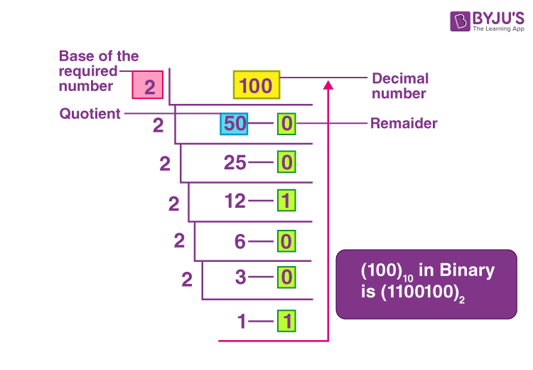
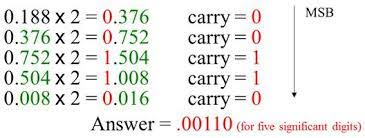
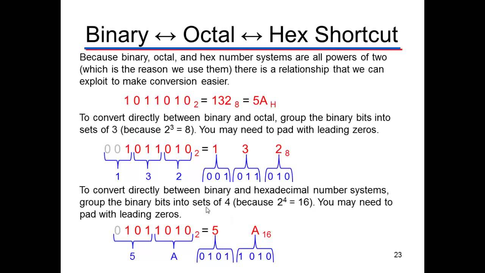

Computers process data into information and work exclusively with numbers. All data is represented in binary form, which represents data in combinations of 1’s and 0’s.
What is a number system?
- A way of representing numerical values
- Has its own arithmetic method
- Any arbitrary numerical value can be represented by a fixed set of symbols consisting of r elements (also known as radix or base).
- The largest-valued symbol always has a magnitude of one less than the radix.
- Each variable that denotes a digit is assigned a weight dependent on its position relative to a radix point.
Different number systems
| Base | System | Base | System |
|---|---|---|---|
| 1 | Unary | 11 | Undecimal |
| 2 | Binary | 12 | Duodecimal |
| 3 | Ternary | 13 | Tridecimal |
| 4 | Quatenary | 14 | Tetradecimal |
| 5 | Quinary | 15 | Pentadecimal |
| 6 | Senary | 16 | Hexadecimal |
| 7 | Septenary | 18 | Octodecimal |
| 8 | Octal | 20 | Vigesimal |
| 9 | Nonary | 24 | Tetravigesimal |
| 10 | Decimal | 25 | Pentavigesimal |
Decimal number system
- Radix/Base: 10
- Symbols: 0, 1, 2, 3, 4, 5, 6, 7, 8, 9
- Written as: 25, or
- Each digit is weighted by powers of 10
Binary number system
- Radix/Base: 2
- Symbols: 0, 1
- Written as: or
- Each digit is weighted by powers of 2
Octal number system
- Radix/Base: 8
- Symbols: 0, 1, 2, 3, 4, 5, 6, 7
- Written as: or
- Each digit is weighted by powers of 8
Hexadecimal number system
- Radix/Base: 16
- Symbols: 0, 1, 2, 3, 4, 5, 6, 7, 8, 9, A, B, C, D, E, F
- Written as: or
- Each digit is weighted by powers of 16
Base conversion
| From | To | Process |
|---|---|---|
| Binary | Decimal | Multiply each binary digit by increasing powers of 2 then add |
| Octal | Decimal | Multiply each octal digit by increasing powers of 8 then add |
| Hexadecimal | Decimal | Multiply each hex digit by increasing powers of 16 then add |
| Decimal | Binary | Continuous division by 2, remainders will be binary digits |
| Decimal | Octal | Continuous division by 8, remainders will be octal digits |
| Decimal | Hexadecimal | Continuous division by 16, remainders will be hex digits |
| Binary | Octal | Group by 3 digits from the right, convert to corresponding octal digit |
| Binary | Hexadecimal | Group by 4 digits from the right, convert to corresponding hex digit |
| Octal | Binary | Convert each octal digit to corresponding 3-digit binary value |
| Hexadecimal | Binary | Convert each hex digit to corresponding 4-digit binary value |
Binary-decimal, octal-decimal, hexadecimal-decimal
Each digit appearing to the left of the binary point represents a value times an increasing power of the relevant base or radix. In this case, , i.e.:
Continuous division

Continuous multiplication

Binary-octal and binary-hexadecimal
One octal digit is equal to three binary digits. One hexadecimal digit is equal to four binary digits. 